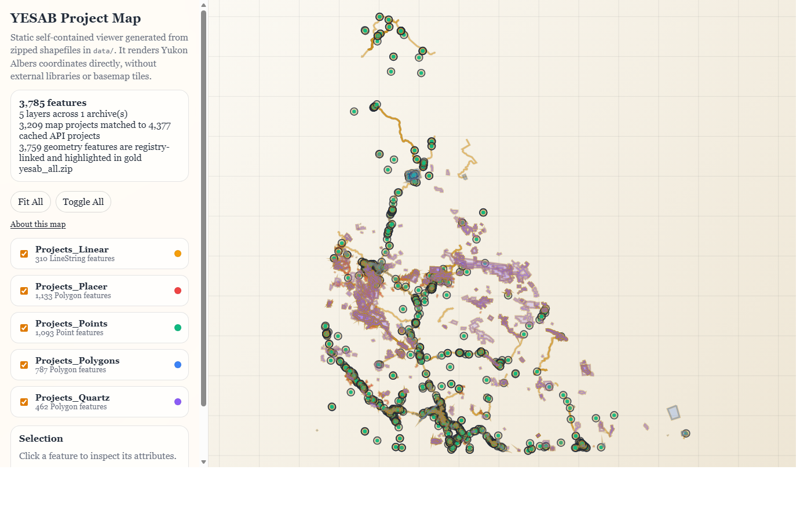
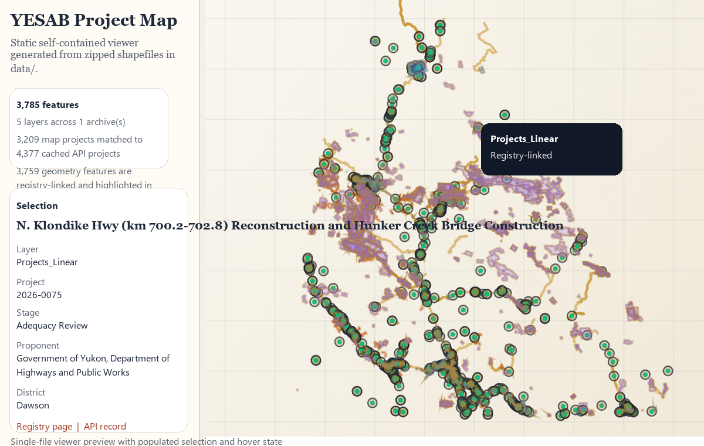
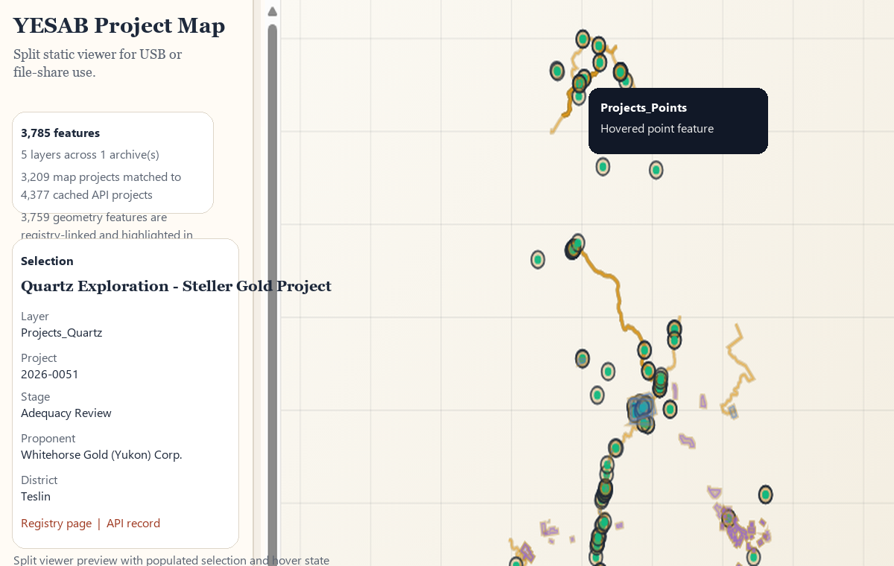

Single-File Viewer
Launchyesab-map-in-one.html


Best when you want one portable file. This version embeds the application and map data into a single HTML document.
YESAB Share Package
This package contains two static versions of the YESAB project map viewer. Both use the YESAB project map geometry and can enrich matching features with cached registry metadata such as stage, proponent, sectors, districts, and direct links back to the YESAB registry.
yesab-map-in-one.html


Best when you want one portable file. This version embeds the application and map data into a single HTML document.
yesab-map/index.html

Best when you want the viewer and data separated into files. It presents the same map with a lighter top-level HTML shell.